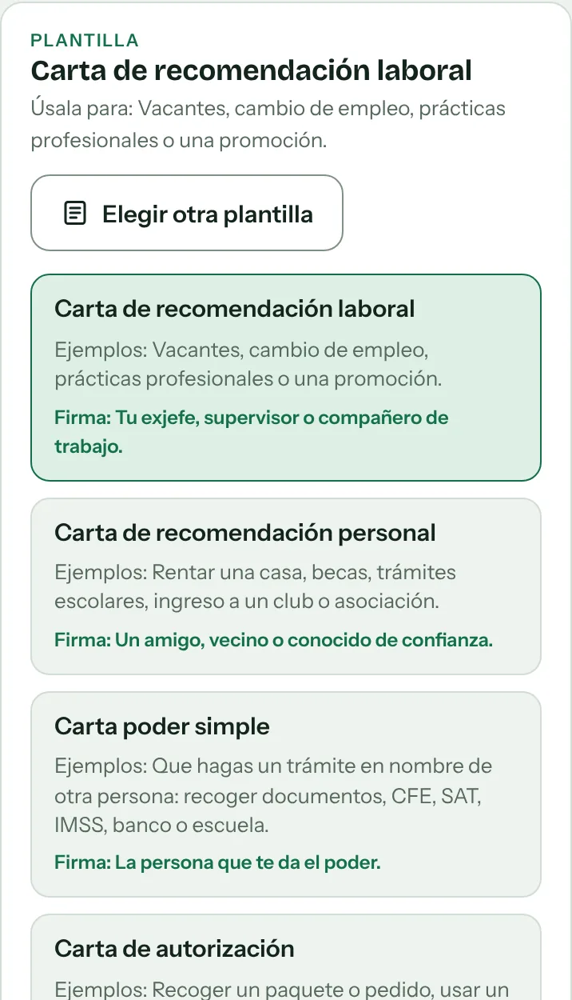
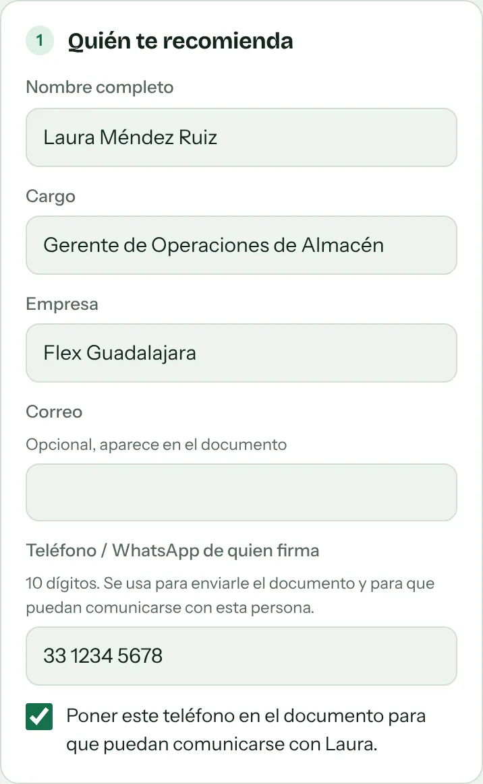
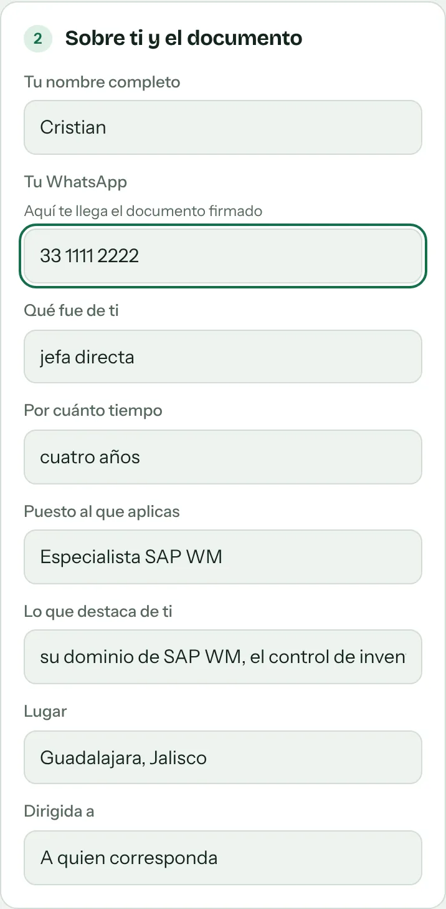
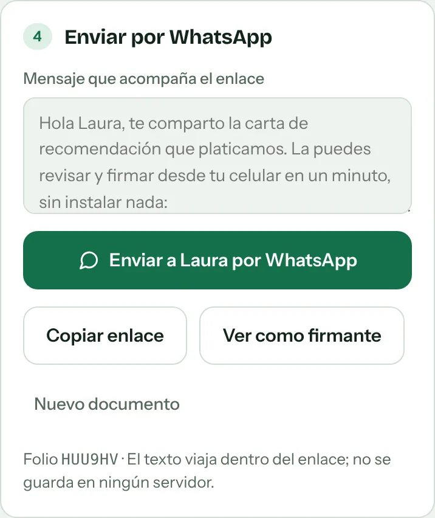
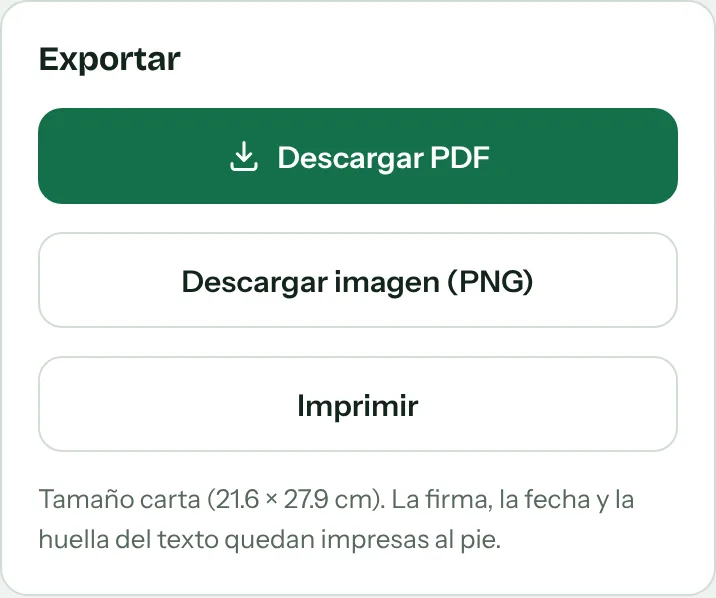
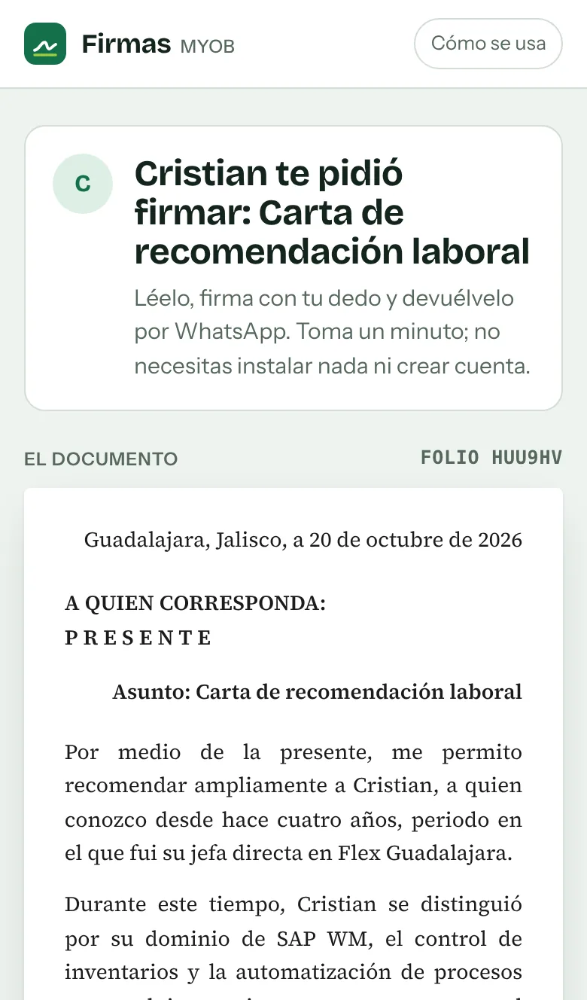
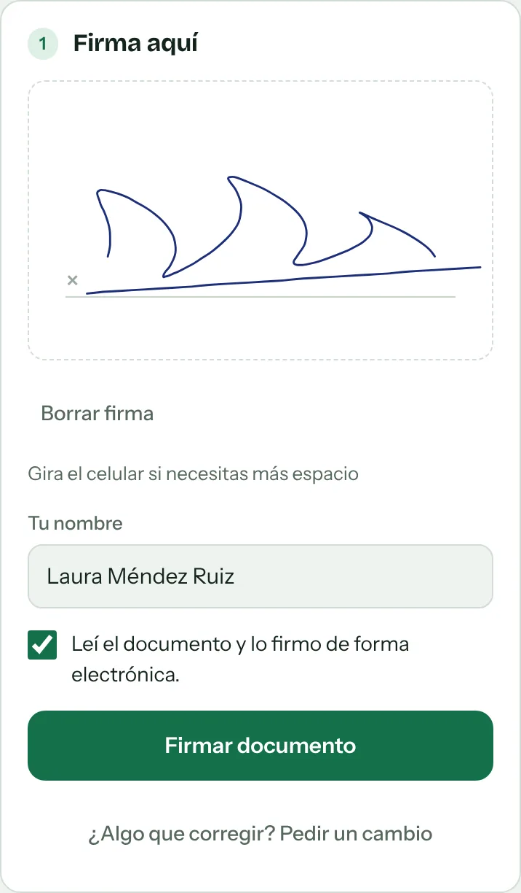
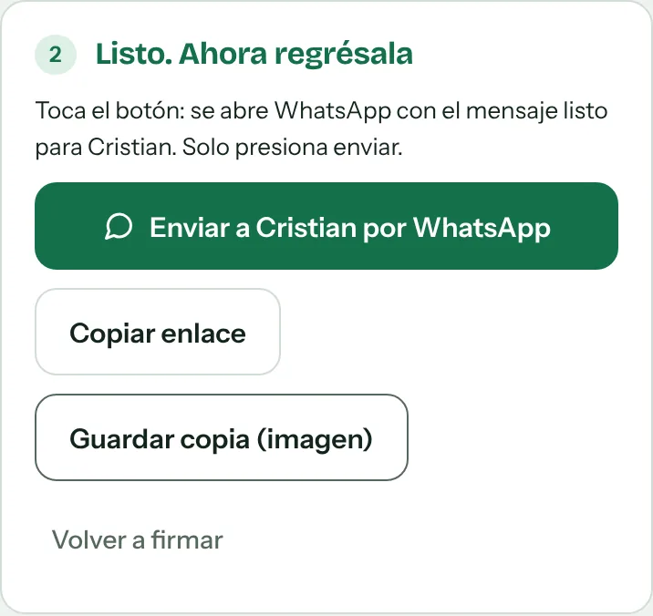

Recomendación laboral
Vacantes, cambio de empleo, prácticas profesionales o una promoción.
Firma: tu exjefe, supervisor o compañeroCartas de recomendación, cartas poder, autorizaciones y más. Tu contacto firma con el dedo desde su celular y tú descargas el documento en PDF o imagen. Sin apps ni cuentas.
Cinco pasos. La primera vez toma unos 3 minutos; después, menos de uno.
Abre la herramienta y toca Elegir otra plantilla. Escoge el tipo de documento que necesitas.

Nombre completo, cargo u ocupación y su teléfono de WhatsApp (10 dígitos).

Tu nombre y tu WhatsApp: ahí te llega el documento firmado. Después llena los detalles que pide la plantilla (puesto, tiempo, trámite…).
El texto se escribe solo. Si quieres cambiar algo, edítalo en Texto del documento y revisa la vista previa.

Toca Enviar a … por WhatsApp. Se abre WhatsApp con el mensaje y el enlace listos. Solo presiona enviar.
¿Quieres verlo antes como lo verá tu contacto? Toca Ver como firmante.

Cuando tu contacto firme, te llega un enlace por WhatsApp. Ábrelo y toca Descargar PDF o Descargar imagen.
Descárgalo en ese momento. El documento solo existe dentro de ese enlace; si borras el mensaje, se pierde.

Cuatro pasos y menos de un minuto. No instalas nada ni creas cuenta.
Tócalo directamente en el chat de WhatsApp. Se abre en el navegador de tu celular con el documento listo para leer.

Revisa nombres, fechas y datos. Si algo está mal, toca ¿Algo que corregir? Pedir un cambio y escribe qué hay que cambiar. Se abre WhatsApp para avisarle a quien te lo envió.
Si necesitas más espacio, gira el celular.

Toca Enviar a … por WhatsApp. Se abre el chat con el mensaje listo; presiona enviar. Listo.
Si quieres quedarte con una copia, toca Guardar copia (imagen).

Vacantes, cambio de empleo, prácticas profesionales o una promoción.
Firma: tu exjefe, supervisor o compañeroRentar una casa, becas, trámites escolares, ingreso a un club o asociación.
Firma: un amigo, vecino o conocidoHacer un trámite en nombre de otra persona: recoger documentos, CFE, SAT, IMSS, banco o escuela.
Firma: quien te da el poderRecoger un paquete o pedido, recibir correspondencia en un domicilio, usar una fotografía.
Firma: quien da el permisoPréstamo de equipo o herramienta, venta de un vehículo o artículo, uso de un espacio.
Firma: quien recibe y se hace responsableConstancias, cartas de no adeudo, acuerdos sencillos o agradecimientos. Tú escribes el texto.
Firma: quien tú elijasNo. Funciona en el navegador del celular o de la computadora. En computadora se firma con el mouse.
En ningún servidor. El texto y la firma viajan dentro del enlace de WhatsApp. Por eso conviene descargar el PDF en cuanto lo recibas.
Es una firma electrónica simple: sirve para cartas de recomendación, autorizaciones y acuerdos sencillos entre particulares. No sustituye la e.firma del SAT ni una firma ante notario. Para una carta poder, algunas oficinas piden además dos testigos y copia de identificación.
El folio identifica el documento. La huella es un código que cambia si cambia el texto. Si envías y recibes desde el mismo celular y navegador, la herramienta te confirma que el texto firmado es idéntico al que enviaste.
Ábrelo tocándolo directamente en WhatsApp, sin copiar solo una parte. Si sigue fallando, pide que te lo reenvíen.
Descarga el PDF e imprímelo. Sale en tamaño carta (21.6 × 27.9 cm).